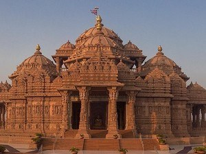

Famous places of North India
Delhi
Historically, the city was known as Indraprastha or Hastinapura, the renowned capital of the legendary Pandavas, which has overwhelming history and rich cultural heritage. It was first created as the capital of an independent kingdom by Tomars in 736 AD. Muhammad of Ghori captured the city in 1192 and his Slave Aibak established the Delhi Sultanate. The first battle of Panipat in 1526 saw the handover of Delhi from the Lodhis of Delhi Sultanate to the Mughals, when Babur established the Mughal Empire. The city of Delhi passed on to the hands of the British in 1803 AD. In 1911, British shifted their capital from Calcutta to Delhi. After independence ...
Dalhousie
At a distance of 51 km from Chamba, 86 km from Pathankot, 167 km from Jammu, 319 km from Chandigarh, 323 km from Shimla, and 564 km from Delhi, Dalhousie is a scenic hill station situated in the Chamba district of Himachal Pradesh. Located at an altitude of 1,970 m, it is one of the famous hill stations in India, and among the must include places in Himachal tour packages. Surrounded by snow-capped mountains, Dalhousie is located on the western edge of the Dhauladhar mountain range of the Himalayas. It was named after Lord Dalhousie, the then Viceroy of India, who established this town as a summer retreat in 1854.
Shimla
Often called the 'Queen of Hills', Shimla is a mesmerizing hill station in Himachal Pradesh. It is one of the top hill stations in India, and among the top Himachal tourist places. It is located about 112 km from Chandigarh, and 348 km from New Delhi. Among the top hill stations in Himachal, Shimla derives its name from 'Goddess Shyamala', an incarnation of Goddess Kali. Kali Bari Temple, Annandale, Vice Regal Lodge, Jakhu Temple / Jakhu Hill, The Mall, Tara Devi Temple, Christ Church, and Kalka - Shimla Railway are some of the best tourist places in Shimla.
Amritsar
At a distance of 82 km from Jalandhar, 140 km from Ludhiana, 240 km from Chandigarh, 207 km from Dalhousie, 244 km from Patiala, 366 km from Shimla, 443 km from Srinagar and 466 km from New Delhi Amritsar is an ancient pilgrimage town and headquarters of Amritsar district in Punjab state. It is the most popular Sikh shrine in Punjab and also one of the top places of pilgrimage in India. Amritsar literally means 'the pool of nectar'. The name Amritsar is derived from Amrit Sarovar, the holy tank that surrounds the marvelous Golden Temple.
Dharamshala
At an average altitude of 1,475 m above sea level, Dharamshala is a pristine hill station situated in the Kangra district of Himachal Pradesh. It is one of the best hill stations in Himachal Pradesh, and among the most famous places to visit near Delhi. It is about 234 km from Manali, 237 km from Shimla, and 486 km from Delhi. Often called the gateway to the Kangra valley, Dharamshala is the headquarters of Kangra district and among the must-include places in Himachal tour packages. In the year 1960, Dharamshala became a temporary headquarters to His Holiness Dalai Lama. Today, it is known as Little Lhasa or Dhasa, because of its large population of Tibetans and Buddhist Monasteries.
Manali
Manali is a breathtakingly beautiful hill station nestled in the mountains of Himachal Pradesh near the northern end of the Kullu Valley. About 295 km from Chandigarh, and 545 km from Delhi, it is one of the top hill stations in Himachal, and among the top places to visit near Chandigarh. Renowned for its snow-covered mountains, scenic beauty, history, and culture, Manali is located at an altitude of 2050 m and is spread along the banks of the river Beas. Manali is named after the Hindu lawgiver Manu. Often referred to as the 'Valley of the Gods', Manali is one of the popular hill stations near Delhi.